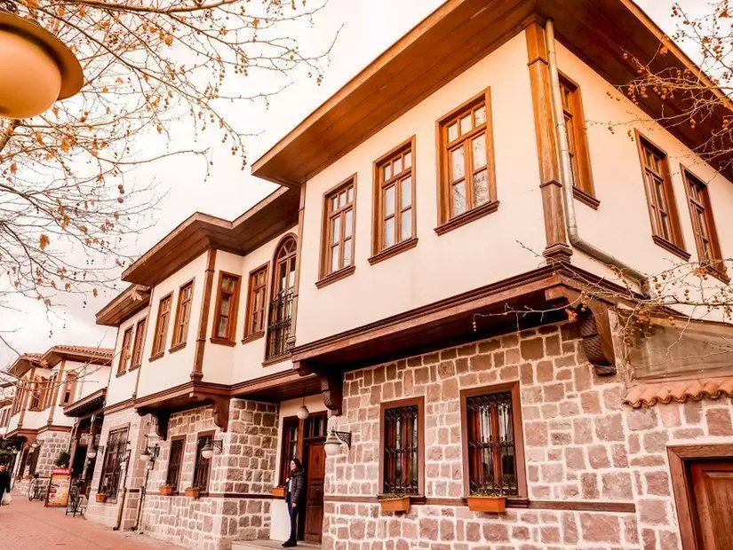
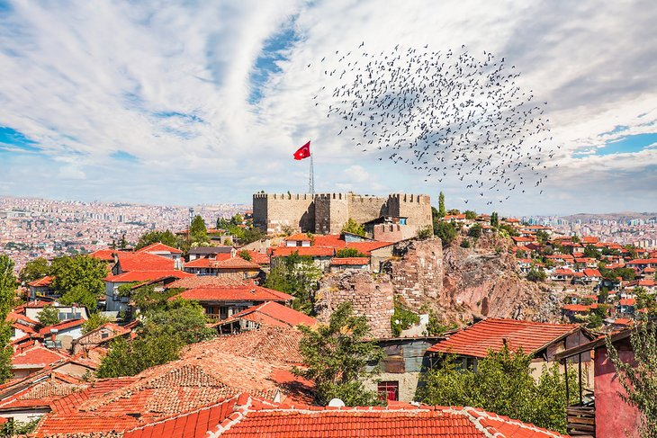

Hamamönü Homes
You can feel the historical smell of Ankara by visiting this place.

Ankara Museum of Anatolian-Civilizations
This museum is reason enough to include Ankara on your Turkey itinerary.

Ankara Citadel
The citadel (Kale) area dates from the Byzantine era and is ringed by, still immense in places, fortifications raised in the 9th century.